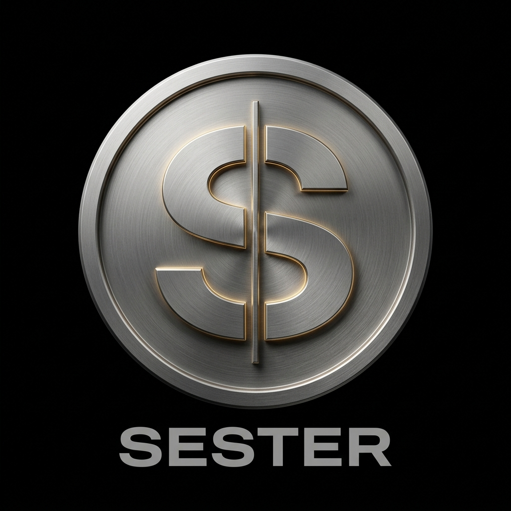
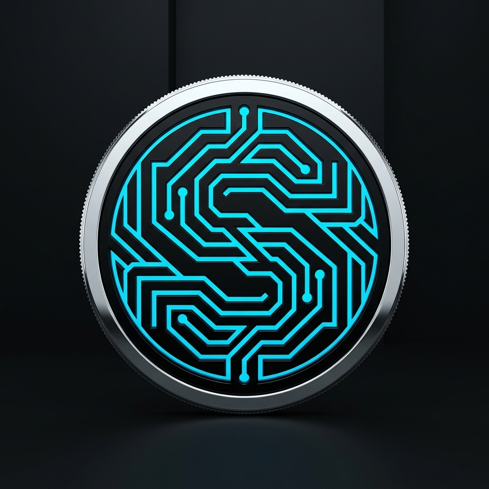
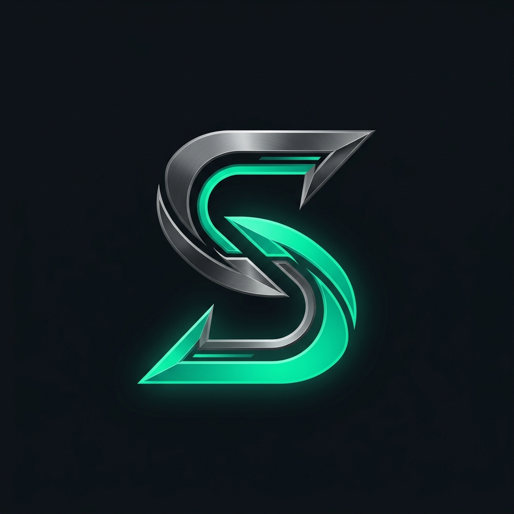
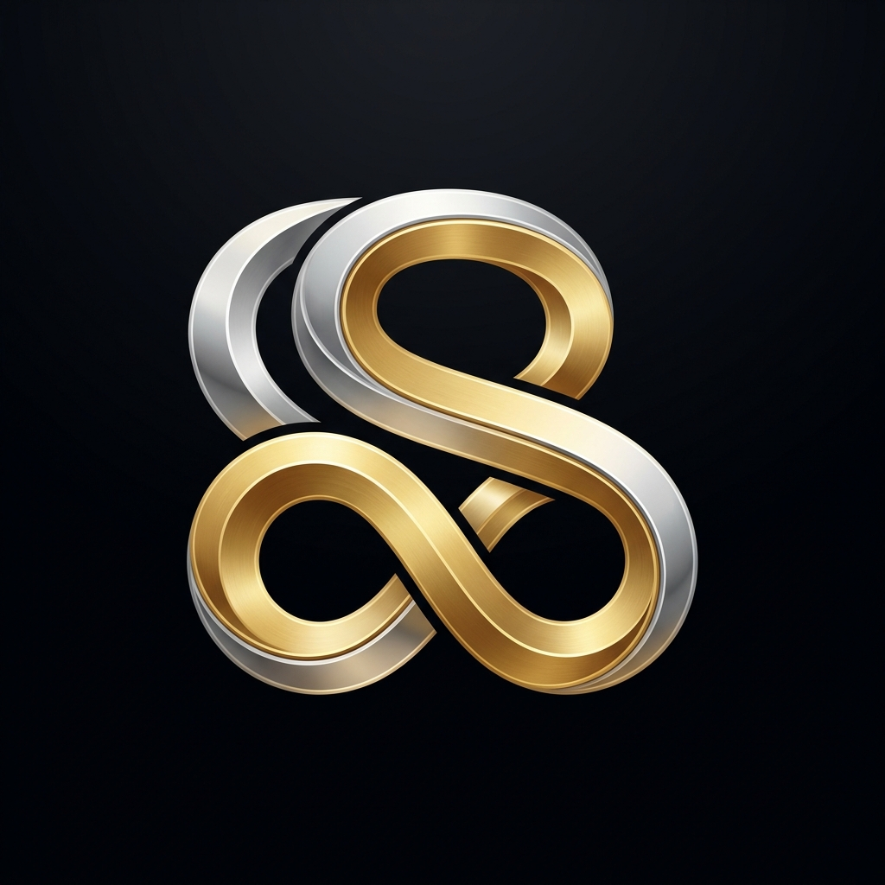
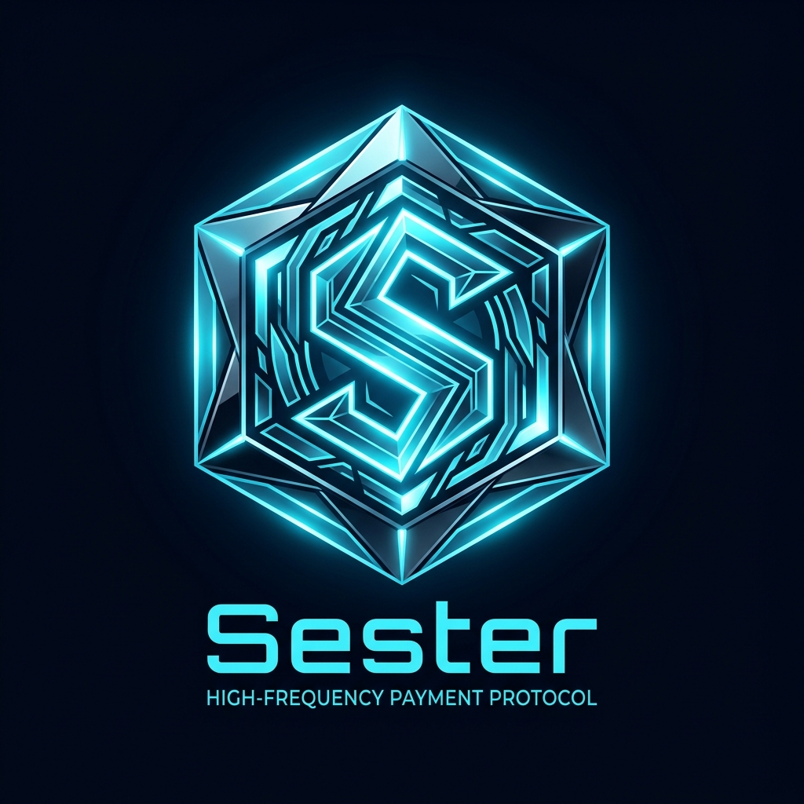

Antik Roma'nın standart ticaret sikkesi 'Sestertius' mirasını; x402 yüksek frekanslı mikro ödeme el sıkışması, sayaç (metering) ve otonom kota mühendisliğiyle harmanlayan 5 üst düzey konsept.

Masif fırçalanmış titanyum dairesel madalyon ve merkezde sıfır gecikmeli (zero-latency) dikey kordonla ikiye bölünen anıtsal S harfi. Altında 'SESTER' İsviçre tipografisi. Merkez Bankası ve küresel regülasyon ağırlığında.

Lazerle işlenmiş gümüş sikke çemberi ve çekirdeğinde mikroçip veri yolları şeklinde parıldayan elektrik-camgöbeği (electric cyan) S formu. x402 mikro işlem akışının yaşayan görseli.

Karanlık kömür zemin üzerinde birbirini kesen iki dinamik mikro sayaç bıçağı ve zümrüt yeşili lazer ışıltısı. Linear ve Stripe seviyesinde modern yazılım geliştirici altyapısı monogramı.

Sıvı altın ve parlak platin şeritlerin sonsuz döngüde (Mobius şeridi) akarak oluşturduğu stilize S harfi. Kesintisiz mikro nakit akışı ve sürtünmesiz takas.

Hexagonal kristalin sikke tokenı ve merkezde ışıldayan prizmatik S diyaframı. Solana ve LayerZero ekosistemlerinde doğrudan tanınacak fütüristik protokol amblemi.